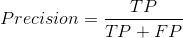
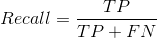
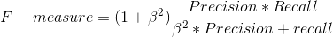

During my experience at IBM Watson, I worked on projects relying on Information Extraction systems to detect mentions in textual data. In this article, I present a humble introduction to these systems and try to summarize the extraction pipeline and its major components.
Information Extraction is the task of transforming unstructured or semi-structured texts or domain-specific documents into more structured data. For example, IE enables us to analyze customers’ reactions and sentiments regarding a specific product or an advertisement campaign.
The IE process starts by extracting “atomic” units called features from the text like sequence of numbers, companies,… This step is called Feature Selection. This phase involves text operations such word dictionaries, part of speech tagging or regular expressions to identify potential entities. The output of the Feature Extraction stage represents low-level features for the Entity Identification task.
The obtained features are used in order to produce high-level features such as entities, relationship and co-references. By the end of these two stages, we will have a collection of entities and relationships. However, the Entity Identification task may produce multiple entities for a same person or same object. That is why, the IE pipeline contains another brick called Resolution which enables us to check and clean the output of the Identification phase.
The quality of the extraction pipeline is highly related to the quality of Feature Extraction. As you may noticed, all the extraction stages digest and manipulate the output of the Feature Extraction phase.
As I mentionned above, the Feature Extraction phase relies on dictionaries, regex or part of speech tagging to generate relevant mentions in the text. I assume that you are familiar with regular expressions and dictionaries. As for speech tagging, there are two different methods: shallow parsing and deep parsing.
It will split the sentence into tokens and identifies the lexical information of each token (part of speech, lemmas,..). The shallow parsing does not consider the whole sentence structure. That is why, it may attribute false labels to words.
It does not break the sentences into tokens but processes the entire sentences to produce accurate information about the sentence and the role of each word. Deep parsing is very accurate and effective for part of speech tagging. However, it is more expensive in terms of computation compared to shallow parsing, dictionaries and regular expressions.
The main difference between these two systems consists in how the Entity Identification is performed.
These models use set of linguistic rules to determine entities and relationships. To produce the set of rules to feed in the Rule-Based model, a human intervention is necessary. A linguistic or an analyst should consider different document examples to define the rules for the first and second stages of the IE system. This person should have the skills to determine what kind of entities and relations the extractor should detect. This type of IE systems is efficient for basic text extraction and well defined structures.
The ML-Based model differs from the Rule-Based one in the ways the entities are identified and extracted. In addition to Feature Selection rules, the ML-Based extractor needs labeled data called the Ground Truth. Thus, an additional human intervention is necessary to annotate documents to feed into the system. The ML-Based system uses the extracted features and labels to train a machine learning algorithm. The obtained model will enable us to extract entities from new documents.
An idealistic extractor will identify all the correct mentions of entities, relationships, etc. in a text and nothing else. To qualify any model, it is useful to define a confusion matrix to see how your system is classifying the inputs.
| Correct | Incorrect | |
|---|---|---|
| Correct extracted mentions | TP | FP |
| Incorrect extracted mentions | FN | TN |
The quality of the extractor is measured by the Precision and the Recall. Here an easy way to distinghuish between these two measures:
Among all the correct mentions identified by the extractor how much are really correct? I directly link the precision to the predictions of the extractor, which means that we will focus on the first line of the confusion matrix. The precision indicates false alarms. So, we look to our confusion matrix, we can easily write this equation:
Among all the mentions that should be extracted, how much does my extractor was able to correctly identify? The recall is related to the Ground Truth which means that we will focus this time on the first column of the matrix. The recall indicates the misses.
In practice, these measures are not sufficient to qualify an IE system. That is why, we use the F-measure defined as weighted harmonic mean of the precision and the recall.
In practice, we would like to implement IE systems that are scalable to huge number of documents and efficient in terms of runtime. Two metrics are defined in order to measure the runtime performance.
represents the number of raw documents the system can process in a single unit of time. It is measured in KB/sec/core.
It's the memory the system needs to achieve near peak throughput.
Rule-Based models have a better runtime performance compared to ML-Based systems.